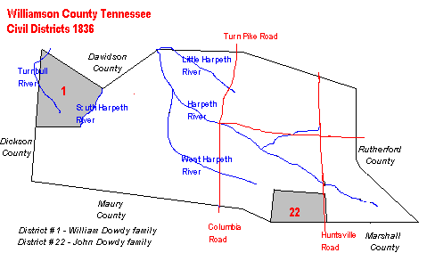
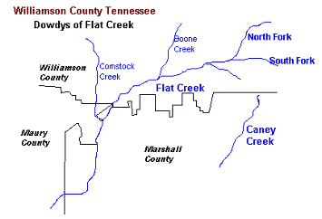

Tennessee TennesseeResearch - Williamson County |
|
 1800s 1808 - Deed Book B: Wm Allison from Alexander Rutledge 167 ac on Weakley Cr the North fork of Duck River land granted to Ebenezer Allison. Adj. John Harris, Stephen Halbert, Robert Chapman. Test: JOHN DOWDY, Duncan McIntyre, James Allison. Sept 24 1808 (source: editor) note: one abstracted version of this document lists Dowdy as Dowd. 1809 - Tax List - 1810s 1810 - Tax List - 1810 - County Court Oct 11 1810 p509 Jurors to next County Court: William Dowdy....etc (source: editor) 1810 - Nov 20 - Micajah Dowdy m: Rebecca Tucker, Wm. Tucker bond 1811 - Tax List - 1812 - Tax List - 1812 - Jul 12 - Wm.Dowdy - Court minute, Jury duty 1812 - Jul 14 - Wm.Dowdy - Court minute, road work with Wm.Tucker 1812 Oct 12 - - Wm.Dowdy- Court minute, on Jury 1812 Oct 13 - - Wm.Dowdy-Court minute,road work, Shannons Pond to Dickson Co 1812 Oct 14 -- Wm.Dowdy - Court minute - on jury 1812 Oct 15 -- Wm.Dowdy - court minute - excused from Jury 1812 -Dec 2 - Wm. Dowdy - Grant Bk 1 - Grant #4436 for 50 acr 1813 - Tax List - 1814 Apr 8 -- Wm. Dowdy-Court min - overseer road from Shannons Pond past his home to Dickson Co Line 1815 - Tax List - Sistlers "Early TN Tax List" 1815 -Nov 10 - Wm. Dowdy -Grant Bk. L - Grant #8162 - 15 acr 1816 -Feb 22 - Allen Dowdy m: Martha Tucker, Bond: Wm.Dowdy 1817 - Jan 15 - Will Book 2 - John Dowdy at estate sale of Nathan Trull 1820s 1820 Census
1820 - Jun 10 - Wm. Dowdy m: Elizabeth Edwards, bond:Wm.Tucker 1820 - Aug 26 - Wm. Dowdy-Grant Bk. FF - Grant #14882 - 30 acr 1822 - Oct 24 - Mary "Polly" Dowdy m: Jeremiah Jordan Johnson, Bond: Gibson Dowdy (she dau of John Dowdy SR) 1822 - Dec 10 - Grant Bk. U, Grant #18394 - 2 acr 1822 - Dec 19 - Micajah Dowdy m: Patsy Tally. Bond: Anderson Hall (he son of John Dowdy SR. Micajah dec'd before 1841) 1823 - Dec 25 - Catherine Dowdy m: John N.Anderson. Bond: A.A.Edney 1823 - Aug 1 - Micajah Dowdy - Deed Book H - 15 acr from Samuel Bryan 1824 - May 20 - Wm. Dowdy - Land Entry - 60 acr west fork Brush Creek, including his 15 acre tract, making total 75 acr 1824-June 4 - John Dowdy - Chain carrier for Wm.Nalls entry #51 on Brush Creek and line of John Dowdy & Isaac Carter 1824 - Jul 5 - Wm. Dowdy - land Entry #31 for 125 acr Brush Creek adj his 50 acres 1824 - Jul 26 - Wm. Dowdy Land Entry #89 - 50 acre Brush Creek adj his 30 acr 1824 - Jul 26 - Allen Dowdy - Land Entry #87 - 50 acr on Little Turnbull adj his 16 acr 1824 - Jul 26 - Joseph Dowdy - Land Entry #90 - 100 acr Little Turnbull adj his 10 acr he bought fromLewis Loyd 1824 - Oct. Deed of Conveyance from Samuel Byers to Micajah Dowdy produced in Court (source: editor) 1824 - Nov 3 - Will Book #? pages 757-758. June Term 1825. Instrument dated Nov 3 1824. Will of Amillian Hassell....daughter: Amillian and Affa Hassell, Elizabeth Dowdy, Mariah Alexander,. Sons: Joseph, John, James Hassell. Wit: Benjamin Leigh, James Dillin [see Tyrrell Co NC] 1824 - Dec 11 - Hannah Dowdy m: James Edwards. Bond: Wm.Dowdy 1825 - Feb 7 - Wm. Dowdy Mid.TN Grant #944 - 60 acr, Bk. 2,pg.178 (Index only) 1825 - Jul 7 - Allen Dowdy - Mid TN Grant #1692 - Bk. 3, pg. 2 (Index) 1825 - Jul 7 - Joseph Dowdy - Mid TN Grand #1691 - 100 acr Bk.3,pg 2 (Index) 1825 - Jul 7 - Wm. Dowdy - Mid TN Grant #1688 - 125 acres Bk.2, pg.926 (Index) 1825 - Jul 7 - Wm. Dowdy - Mid TN Grant #1693 - 50 acres Bk. 3, pg. 3(Index) 1825 - Dec 8 - John Dowdy - 300 acre Flat Creek & No. branch Duck River from Thos. Gillespie.  Witn: John Tucker, John Allison, J. Gillespie. (see also Bedford and Marshall County data)1826, Feb 1 - John Dowdy - Land Entry #309 "Underhills 50 acr tract where John Dowdy now lives 1827 - Dowdy, John , Wmson, 1827, 75 ac, M dist, bk 9, p 163, grant #7320 (source: editor) 1827 - May 1 - John Dowdy - Land Entry #308 -75 acr Little Turnbull, includes 10 acre where widow Tucker lived. Surveyed 1 May 1827.SCC: Wm. Dowdy 1827 - May 2 - Wm. Dowdy - Land entry #314 - 300 acr Brush Creek surveyed 2 May 1827 1827 - Feb 3 - Wm. Dowdy Land Entry #315 surveyed - 60 acr Brush Creek surveyed 1 May 1827 1826 - Apr 3 - Allen Dowdy Land Entry #389 -100 acr Little Turnbull Crk surveyed 16 May 1827 1826 Apr 3 - Allen Dowdy Land Entry 3390 - 200 acr Little Turnbull & his 50 acr surveyed 16 May 1827 1827- May 7 - Wm. W. Dowdy chain carrier for land entry of Wm. E. Owens 1827 - Jun 1 - John Dowdy witn'd will of Isaac Gillespie. Other witn: John Tucker 1827 - Oct 5 - Joseph Dowdy - Land Entry #597 - 100 acres Turnbull Crk and line of Joseph Tucker. SCC: Allen Dowdy 1827 - Nov 20 - John Dowdy - Mid. TN Grant #7320 - 75 acr, Bk.9, pg. 163 (Index) 1828 - Dowdy, Allen , Wmson, 1828, 100ac, M dist, bk 9, p 350, grant #7521(source: editor) 1828/1833 - Joseph Dowdy sold land to Moses Caton, Ephraim Benson, et al, Trust Deed Bk. J, pg. 298 (Index only) 1828 - Feb 1 - Wm. Dowdy - Mid TN Grant #7473 - 300 acre, Bk 9, pg.311 (Index) 1828 - Feb 1 - Wm. Dowdy - Mid TN Grant #7474 - 60 acr, Bk 9, pg.312 (Index) 1828 - Jul 20 - John Dowdy sold 50 acr on Flat Crk to John Tucker. Wit: Wm. C. Dowdy 1828 - Nov 12 - Fanny Dowdy m: George Watson 1829 - Dowdy, Allen , Wmson, 1829, 200ac, M dist, bk 11, p896, grant #9651(source: editor) 1829 - Jul 2 - John Dowdy JR m: Sally Tucker (JR is son of John Dowdy SR) 1829 - Aug 5 - Joseph Dowdy - Grant #9654, 100 acre, Bk 11, pg. 899 (Index only) 1829 - Sep 28 - Martin Dowdy m: Sophia Western Anderson 1830s 1830 Census
1830 - Dec 14 - Jo F. Dowdy (Joseph??) Chain carrier for John N.Anderson entry #786 (Is this Joseph F. Dowdy, son of William Dowdy: Wmson TN > Marshall MS?) 1831 - Feb 10 - Nancy Dowdy m: Thomas Weaver 1831 - Jun 29 - Wm. Dowdy - his line was boundary for deed of David C. Water on Cresh Creek 1832 - Aug 9 - Allen Dowdy m: Betsy Sullivan 1833 - Aug 4 - Frances Dowdy m: Joseph W. Wilson (dau of John Dowdy JR) 1833 - October - Loose Records William Lane departed this life in Dec 1823 intestate. He left a widow, Frances, and children: Robert, Thomas, William, John, Reuben, Benjamin Lane and Nancy who married Josiah Hogan. Thomas Lane was appointed Admr. of the estate in Jan. 1833. Said William owned 3 slaves which cannot be divided between the many heirs. Admr. want to sell slaves for a division. Said William also owned a tract of land on the waters of Big Harpeth adjoihning the lands of Eleazer Hardeman, Peter Burton, John Buchanan and John W. Crunk and containing 150 acres. The widow is entitled to a dower. [note: widow Frances Lane is the daughter of John Dowdy of Goochland VA}(source: editor) 1835 - Mar 9 - John Dowdy bondsman for marr of Annis Tucker & Benj. N. Bugg 1836 - Tax List - 1836 - Elizabeth Dowdy m: Wm. Taylor (dau of John Dowdy SR) 1837 - Western Weekly Review Newspaper (TN) abstract -"Dowdy, George R. died August 26, 1837 in Marshall County TN. Son of William Dowdy, late a resident of Williamson County TN." 1838 - Tax List - 1839/1842 - John Dowdy bought land from David Chrisman. Deed Bk.Q, pg.108/109 (Index only) 1839 - Mar 4 - Martin Dowdy bondsman for Allen Tucker Guardian of Wm. Tucker's children 1839 6 Apr - Dowdy. Garner M. married Eliza Graham. Bondsman was John Dowdy 1840s 1840 Census
1840 Feb Loose Papers - Dowdy, John named Admin of Enoch Heaton, Estate 1840 29 Jun - Dowdy, Joseph his line mentioned as boundary of James Byrd entry, also Tuckers line 1840 6 Jul - Dowdy, Joseph , James Byrds entry bounded by his land opposite Joseph Tuckers, on Little Turnbull Creek 1840 6 Aug Bk. Q, pg. 108 Gift of Land- Dowdy, John SR from David Chrisman. Dowdy was Deacon of United Predestinarian Baptst Church.1 acr Flatt Crk.Witn:Page, Pate & Reynolds 1842 7 Mar court record - Dowdy, Rebecca (her minor children) , Allen C.Tucker renewed his bond as Guardian of: Matilda, Emeline, Tennessee & George Tucker 1843 - Census of children between ages 6 and 21 District 22 (not alphabetical)
1843 7 Feb court record Rebecca Dowdy (her minor heirs) Settlement as Guardian of her minor heirs for the year ending 6 Feb 1843 1844 1 Jul - Johnson, Jordan Est settled. Henry Walker Exec of John Dowdy who was Admin for Jordan Johnson, filed settlement 1844 10 Oct - Dowdy, Joseph his line. mentioned as boundary of Charles Williams entry on Turnbull creek 1844 24 Dec Bk. S, pg. 627 - Dowdy, John SR sold land to Milton Powell, 40 acr $280, Flatt Creek, John Luckens line & Mary GILLESPIE's line.Witn: Garner M. & John Dowdy JR 1845 14 Apr - Dowdy, John (SR) Will. wife Raney(Serany),chldrn:Samuel,Sally(Sarah)not of age + /other /chldrn unnamed.Exec:HenryWalker. Witn:JohnWall,Wm.Tucker ( ) 1845 May - Dowdy, John Sr. death Will probated May term 1845. 1845 20 May Dowdy, John SR Estate Invtry. Serany,Garner M,Amos,Sarah,John JR,Samuel,bought at sale. /Also /Wm Taylor,W.L.Pate,S.S.Chrissman.Henry Walker, exec. ( ) 1846 9 Nov Bk. S, pg. 427 - Dowdy, John JR sold land to Wm.C.Taylor for $67, his share of father John DOWDY SR estate (brother to Garner Dowdy) 1847 Bk.S, pg. 466 Jan - Dowdy, Amos sold land to BROTHER Garner M.DOWDY for $65, Amos share of / Father John DOWDY SR's land. SEE COPY IN FILE 1847 23 Jun - Dowdy, John SR est settled $: owed to Garner & John Jr., & sis Mary Johnston. / $ due from Amos & John JR. 1847 25 Jun - Dowdy, John SR Est Settlemt. partial settlement showed that as of 1 Jun 1847 there /was $556.28 in hands of Executor Henry Walker 1848 28 Oct - Dowdy, Charles married Martha Virginia Wells / Bondsman: James Dowdy 1848 22 Nov (Bk. T, pg. 200-201) - Dowdy, Samuel sold land with sis Mary Johnson,Frances Wilson,Rachel & Sarah Dowdy /and /brothr Garner, to Wm.S.Pate, their share of fathers land ( ) 1848 22 Nov - Dowdy, Garner M. (G.M.) sold land to Wm.S.Pate,his 2/10 share of fathers land, lines Bk. T /Pg.200/ of Chrissman/Gillespie/Born & Powell ( ) 1848 22 Nov - Dowdy, Raney (Serany) sold land to Wm.S.Pate, her 1/3 dower share of husbands land Bk. T /Pg. /201 lines of Chrissman/Gillespie/Born & Powell ( ) 1849 1 Jan - Dowdy, John SR est settlemt. Admin.W.L.Pate reported $156.28 owed to Est.in form of 4 /notes /from various people, including G.M.DOWDY & Wm. Taylor ( ) 1849 28 Apr - Dowdy, Sarah married John Ragsdale. (no bondsman shown) / / she is sister of Garner M. Dowdy ( ) 1849 8 Jul - Dowdy, Rachel married Jefferson Shannon. (No bondsman shown) / / she is sister of Garner M. Dowdy ( ) 1849 26 Nov - Dowdy, John SR Petition. Lewis & David Dowdy,sons of Micajah,petition Court for th/eir fa/ther's 1/10 share. 1849 26 Nov - Dowdy, John SR Re:Petition. Court orders investigation to see if Lewis & David's 1/10 share should be sold, or kept for them.(they are minors) ( ) 1849 26 Nov - Dowdy, John SR Re:Petition. J.A.Pate & D.A.Gillespie give affidavit-they feel Lewis /and /David's 1/10 share should be sold. ( ) 1849 8 Dec - Dowdy, John SR Re: Petition. Court orders that Lewis & David Dowdy,heirs of Micajah, have their 1/10 share sold at public auction. ( ) 1850s 1850 Census
1850 27 Mar - Dowdy, John SR Est.Settlemt. Admin.W.L.Pate reports $66.83 in his hands. Also shows /rent i/ncome various pmts made. 1852 18 Mar - Dowdy, John SR Est.Settlemt. Court orders that David & Lewis' share be vested in new/owners/name. New owner: W.L. Pate ( 1853 6 Feb - Dowdy, Martha V marriage to Richard R L Mincy (Mency) info from LaVerta Buhrens - and from the IGI - not proven 1860s 1860 Census
1867 15 Sep - Dowdy, Sarah to James C. Bandy info from LaVerta Buhrens - not proven 1869 7 Oct - Dowdy, William his line. Allens entry bounded by William Dowdy & Weavers in District 1 1870s 1870 Census
1880s 1882 - Loose Records - D.R. Corlett, Admr. vs. Hannah Edwards et al - James Edward estate - 1882 - Deposition of George R. Tucker - 57 years old - I reside in the 22nd district....James Edwards heirs are: Mrs. Martha Tanner, wife of John Tanner is a grand neice. Malinda Kingston, Nancy Corlett, Sarah Camp, Phoebe Nois, George Dowdy, and Lewis Dowdy are children of William Dowdy whose wife was a neice of James Edwards. Malinda Kingston Lives in Bedford County. Mrs. Nancy Corlett and Mrs Sarah Camp lives in Williamson Co. Phoebe Nois lives in Davidson Co. George and Louis Dowdy lives in Cheatham Co. Deposition of A.D. Edwards - 32 years old and a resident of Rutherford Co. I am a great nephew of James Edwards. ...James Edwards' heirs are: Betsy Dowdy, Polly Smotherman, Welding Edwards, Jimmie Edwards, dec'd, Sallie Riley who are all neices and nephews, dec'd. Betsy Dowdy's heirs are Malinda Kingston and Phoebe Nois George and Lewis Dowdy and Nancy Corlett. ...
1900s 1900 Census
|